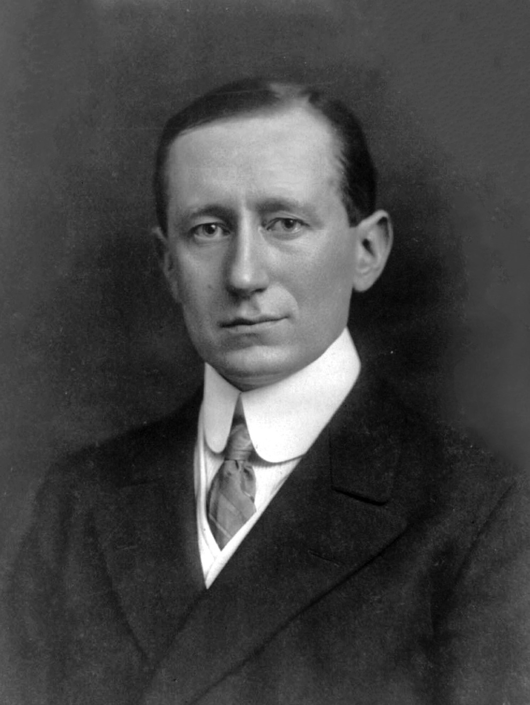
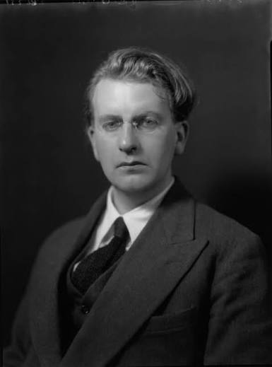

História
A história das ondas de televisão começou no século XX, com o desenvolvimento das tecnologias de transmissão de imagens e sons. As primeiras transmissões utilizavam ondas eletromagnéticas para levar sinais até os aparelhos de televisão por meio de antenas. A partir da década de 1930, a televisão começou a se desenvolver e, com o avanço da tecnologia, tornou-se cada vez mais popular. Atualmente, essas ondas continuam sendo utilizadas para transmitir programas, filmes, notícias e outros conteúdos.
Cientista e biografia
-
 Heinrich Hertz (1857–1894)
Heinrich Hertz (1857–1894)Foi um físico alemão que comprovou a existência das ondas eletromagnéticas em 1887. Suas descobertas foram fundamentais para o desenvolvimento da televisão e dos celulares.
-

Guglielmo Marconi (1874–1937)Foi um inventor italiano conhecido por desenvolver a comunicação sem fio. Em 1895, realizou transmissões de sinais de rádio a distância, contribuindo para o avanço das telecomunicações.
-

John Logie Baird (1888–1946)Foi um inventor escocês que ficou conhecido por desenvolver um dos primeiros sistemas de televisão. Em 1926, apresentou publicamente uma demonstração de televisão com imagens em movimento.
Características
- Tipo da onda:
Eletromagnéticas;
- Faixa de frequência:
Aproximadamente 300 MHz a 300 GHz;
- Comprimento de onda:
Aproximadamente 1 mm a 1 m;
- Propagação:
Não precisam de meio material, podendo se propagar no vácuo.
Aplicação tecnológica
As ondas eletromagnéticas utilizadas na televisão e nos celulares são fundamentais para a comunicação moderna. Elas permitem transmitir informações de um lugar para outro por meio de sinais que transportam imagens, sons e dados, geralmente utilizando antenas de transmissão e recepção. Na televisão, essas ondas permitem que os programas, filmes, jornais e outros conteúdos sejam transmitidos até os aparelhos de TV. Já nos celulares, são utilizadas para realizar ligações, enviar mensagens, fazer videochamadas e acessar a internet. As antenas das operadoras recebem e transmitem esses sinais, permitindo a comunicação entre pessoas que estão em lugares diferentes.
Aplicações na saúde/medicina
Elas contribuem para a saúde e medicina principalmente por meio da transmissão de informações e da comunicação. Elas permitem a realização de consultas médicas a distância (telemedicina), o monitoramento de pacientes por dispositivos conectados e o compartilhamento de exames e resultados médicos. Além disso, facilitam a comunicação entre hospitais, ambulâncias e profissionais da saúde, tornando o atendimento mais rápido, acessível e eficiente.